Fotogalerija

 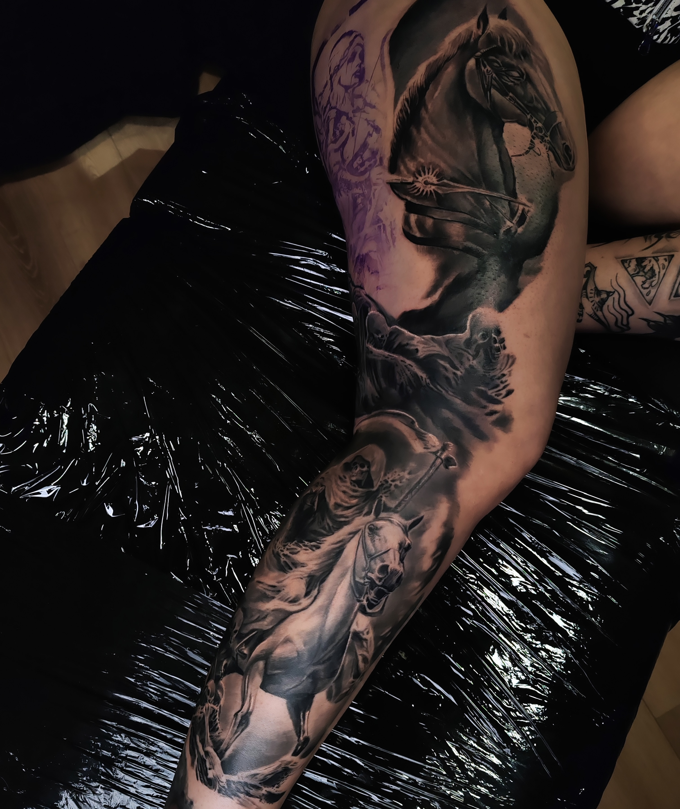
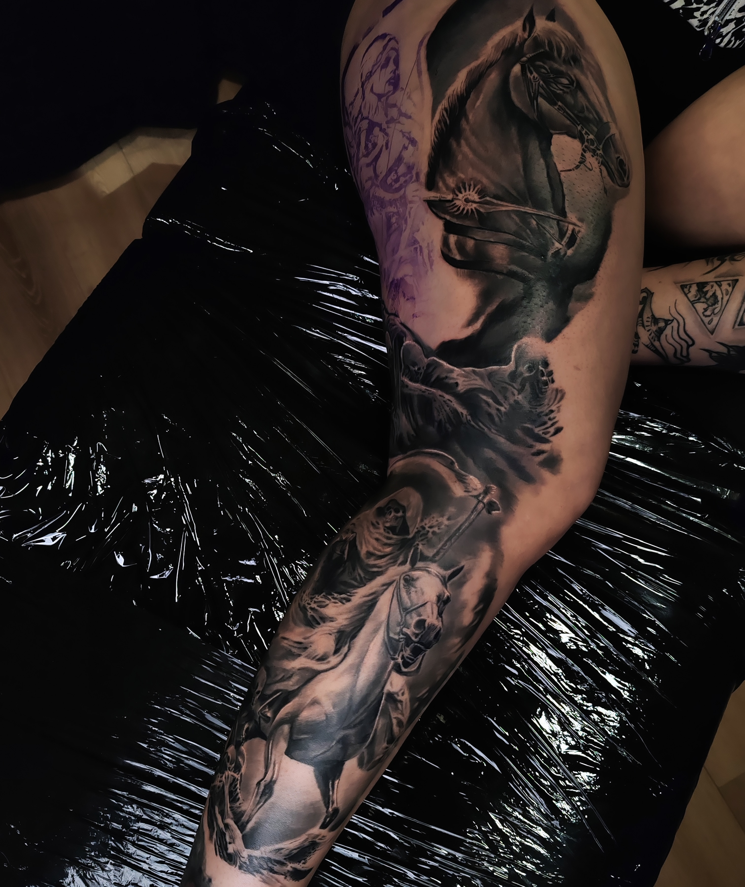
 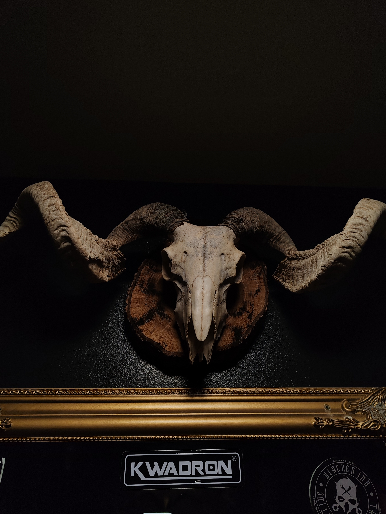
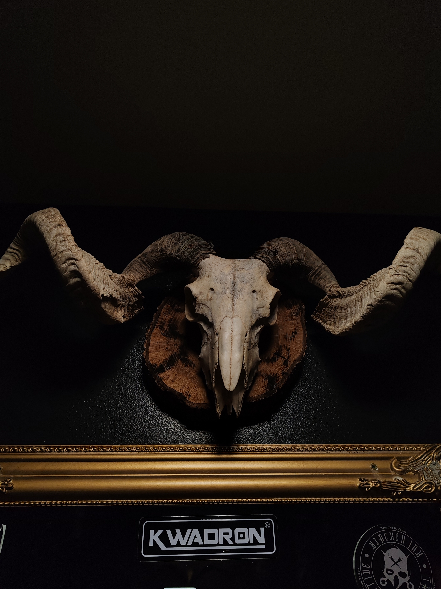

 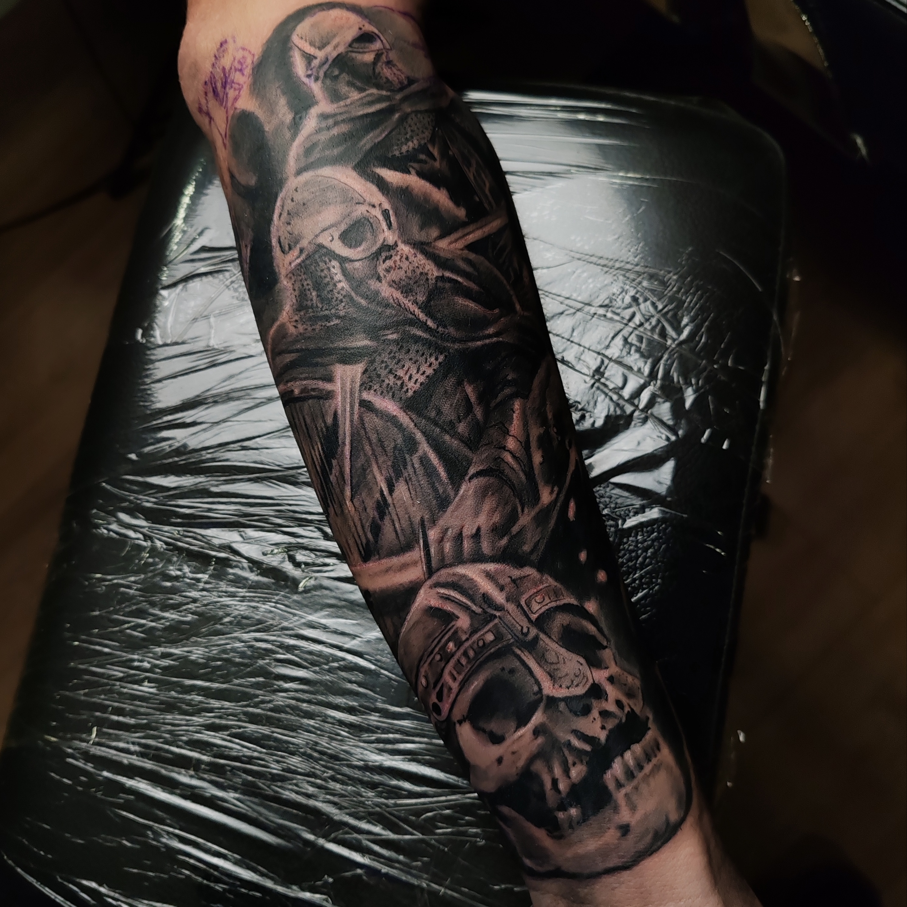
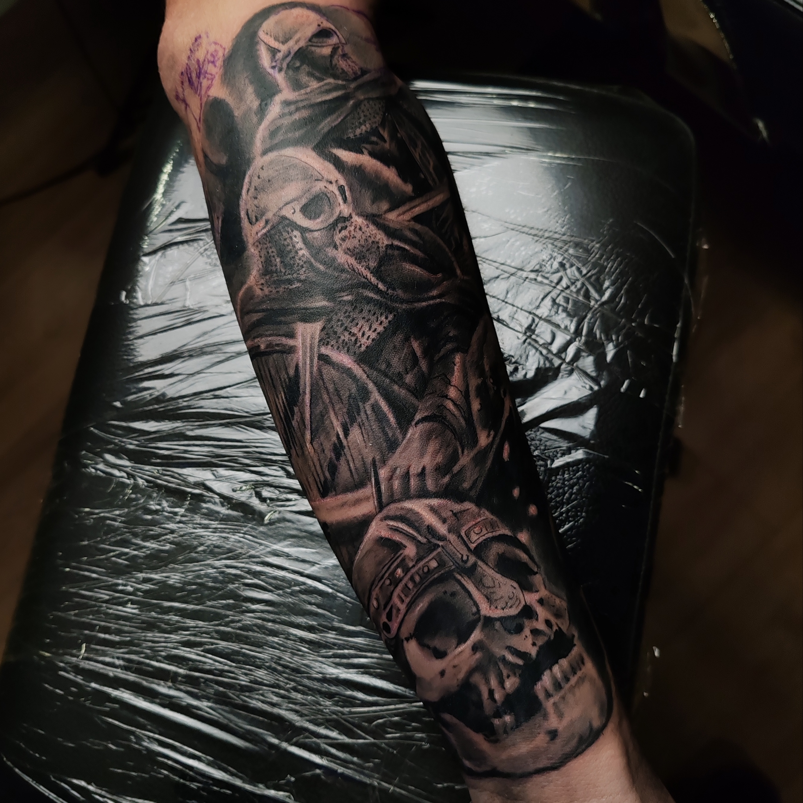
 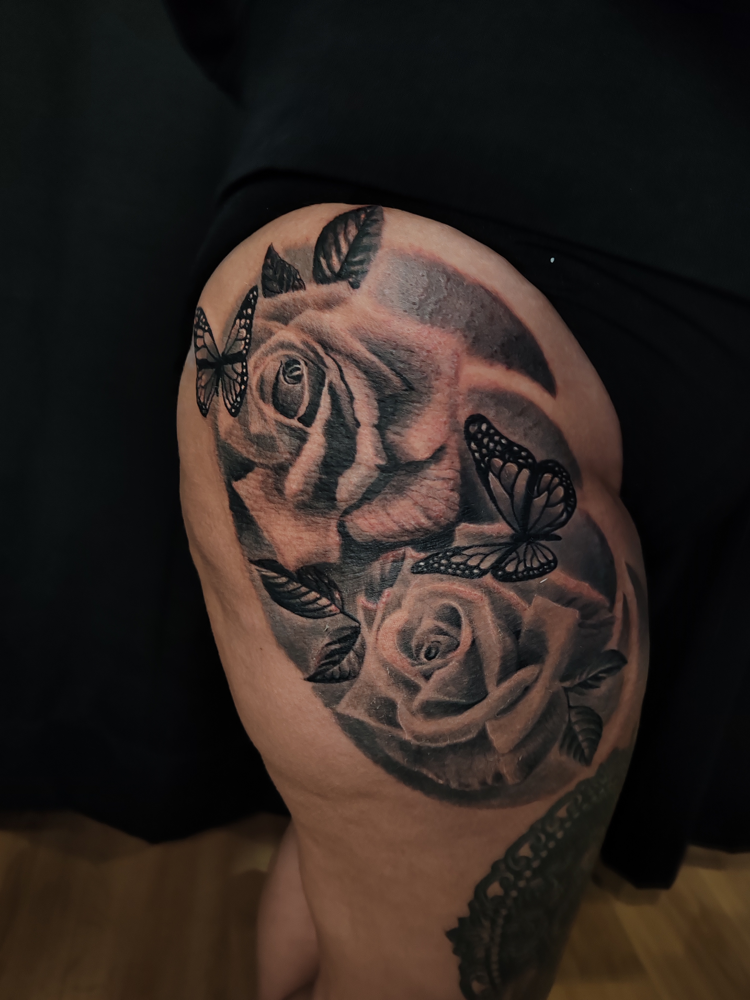
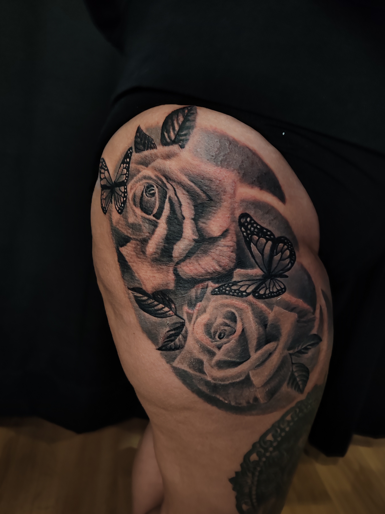
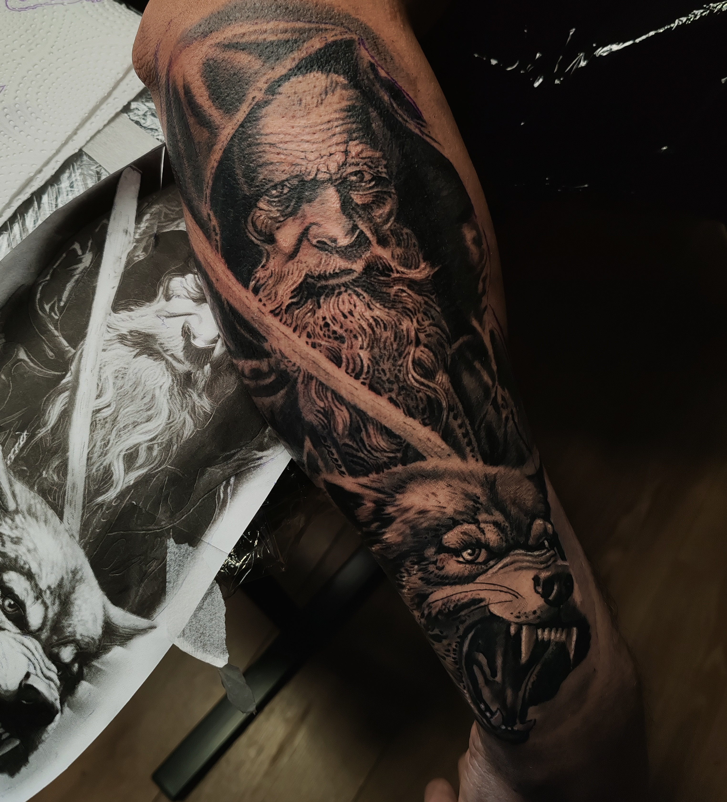
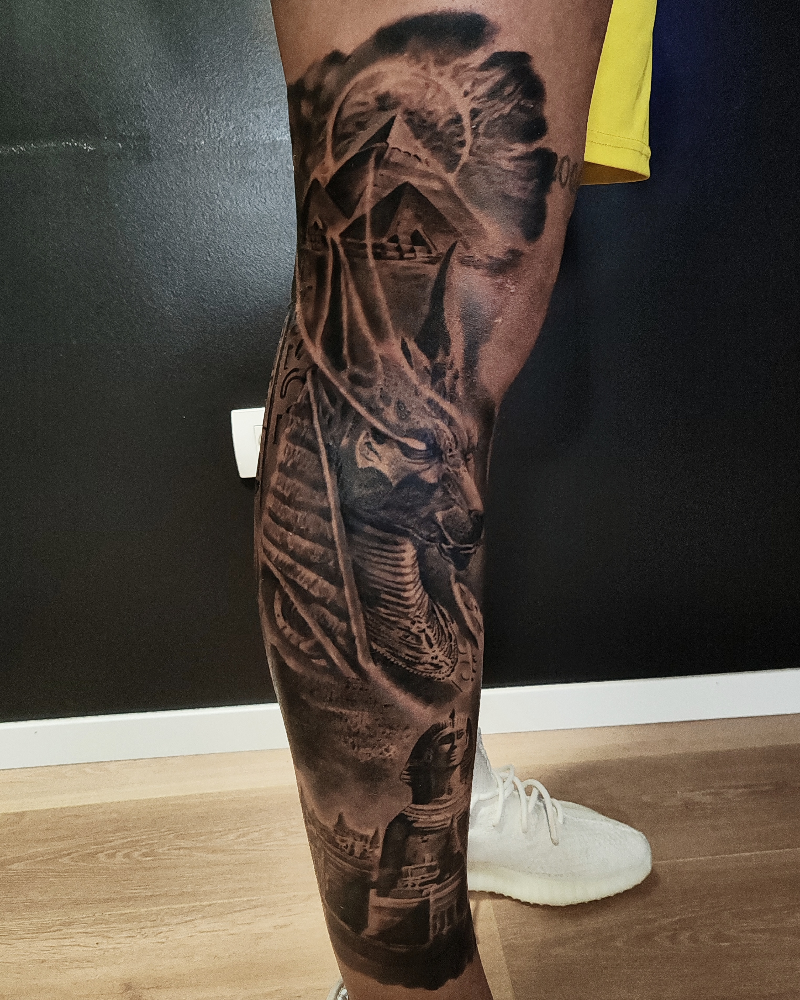


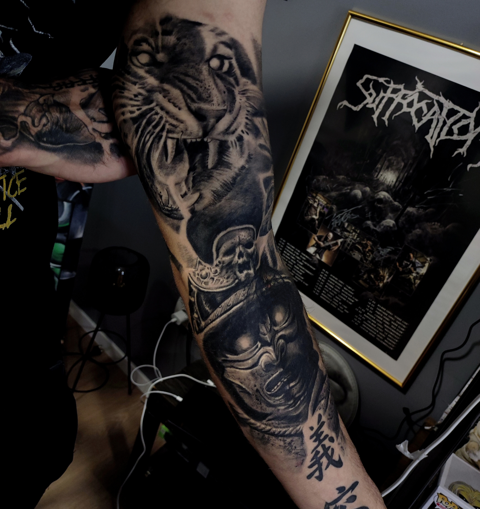


Blackenink Tattoo kolektiv je studio smješten u povijesnom srcu Zadra. Osnovan 2022. godine od strane tattoo umjetnika Marjana "Marsija" Čuklina i vođen od strane njegovog kolege Luke Vuksana, naš studio je brzo postao mjesto za ljubitelje tetovaža koji traže vrhunsku obradu i ugodnu atmosferu.
Posjedujemo vještinu u širokom rasponu stilova tetoviranja, ali posebnu ljubav gajimo prema crno-bijelom realizmu, gdje se umjetnost susreće s realističnim detaljima. Bez obzira jeste li privučeni složenim dizajnima ili minimalističkom elegancijom, naša galerija prikazuje raznolik raspon radova kako bi potaknula vašu maštu.
Za sve one koji žele istražiti našu kolekciju i pronaći savršenu tetovažu za sebe, pozivamo vas da pregledate naše Instagram i Facebook stranice. Od koncepta do izvedbe, Blackenink Tattoo kolektiv posvećen je pretvaranju vaše vizije u stvarnost s preciznošću, strašću i dodatkom umjetničkog štiha. Pridružite nam se u pretvaranju vaših ideja u trajna umjetnička djela koja odzvanjaju značenjem i ljepotom.
U Blackenink kolektivu, razumijemo važnost vremena i planiranja. Dogovoreni termini omogućuju nam da pažljivo organiziramo naš radni raspored kako bismo osigurali da svaki klijent dobije individualiziranu pozornost i kvalitetnu uslugu. Na taj način, možemo posvetiti dovoljno vremena za savjetovanje, dizajniranje i izvođenje tetovaže prema vašim željama i potrebama.
Planiranje unaprijed također pomaže u izbjegavanju gužvi i čekanja, osiguravajući glatku i ugodnu atmosferu u našem studiju. To znači da se možete opustiti i uživati u procesu stvaranja vaše tetovaže bez stresa ili žurbe.
Iako preferiramo dogovorene termine, uvijek smo otvoreni za nove ideje i prilike. Tijekom ljeta ili u slučaju neočekivanih otkazivanja, rado ćemo primiti klijente koji dođu bez prethodnog dogovora. Vaša kreativna inspiracija i spontanost uvijek su dobrodošli u našem studiju.
Stoga, bez obzira želite li rezervirati svoj termin unaprijed ili se odlučiti za spontani posjet, uvijek ćemo se pobrinuti da se osjećate dobrodošlo i zadovoljno s vašim iskustvom.
Tetovaža je ukras,uspomena i nešto što će nas obilježavati do kraja života. Koliko
majstor uloži truda u vašu tetovažu ili piercing kako bi ona izgledala kvalitetno, lijepo
te dobro podnosila godine koje slijede toliko se i od vas očekuje da se brinete za vašu
novu tetovažu!
Održavanje tetovaže:
Po samom završetku tetoviranja stavlja se prozirna folija (prozirna folija za domaćinstvo) koja će
štititi vašu tetovažu od vanjskih utjecaja prvih nekoliko sati nakon tetoviranja. Folija se skida
2,3 sata nakon ili 24 sata nakon samog tetoviranja, ovisno o veličini same tetovaže te o vašim
obavezama poslje. ...
Napomena: u današnje vrijeme se koristi tegaderm, suprasorb itd. ( umjetna
koža ) koja je namjenjena čuvanju tetovaže u prvih 4-5 dana te se u navedenom
periodu folija ne skida osim ako upute tattoo majstora nisu glasile suprotno
nakon skidanja folije tetovaža se ispire u mlakoj vodi, laganim pokretima skinuti s tetovaže
višak tinte, limfe, sukrvice i krvi koje će se lučiti dok je tetovaža pod folijom.
Nakon ispiranja tetovažu posušiti ubrusom ili čistim ručnikom. Limfa se zna lučiti i do 48 sati nakon tetoviranja s
toga je potrebno tetovažu žaštititi folijom. Obzirom da pod folijom koža ne može disati, važno je
znati da od predugog i prečestog nošenja tetovaža se može upaliti, stoga kad god ste u
mogućnosti držite teovažu na zraku, namazanu i bez doticaja s posteljinom, tkaninom i
prljavštinom.
U slučaju da je tkanina (majica, hlače...) preko vaše tetovaže važno je pripaziti da
je odječa čista i prozračna. Ovo je vrlo važno prvih 1,2 dana preko noći kako bi spriječili tkaninu
ili posteljinu da se zaljepi za limfu te ošteti tetovažu tetovaža je površinska rana, te zarasta tek nakon što se preko nje stvori novi sloj kože. Ta
koža je tanka i osjetljiva unutar prvih 2 tjedna do mjesec dana te je potrebno pripaziti na sve
čimbenike koji bi mogli rezultirati oštećenjem tetovaže!
Tetovažu je potrebno mazati s bephanten masti (mr. ink,easy tattoo, hustle
butter... ili nekim sličnim profesionalnim proizvodima za njegu tetovaže) 3 do 4 puta dnevno
unutar 2 tjedna od samog tetoviranja kako bi spriječili eventualni nastanak kraste i kako bi
vaša tetovaža bila masna što je preduvjet za dobro zarastanje. Također mast se nanosi čistim
rukama u laganim, tankim slojevima kako bi koža mogla nesmetano "disati" roba koja će pokrivati
tetovažu potrebno je da bude čista i prozračna.
Tetovaža se unutar par dana u periodu od 2 tjedna počinje guliti (prhutati) sto je normalan
proces zarastanja, također svrab, crvenilo i peckanje koje će prestati nakon par dana ovisno o
koži, također veličini tetovaže i mjestu.
Važno je znati da se tetovaža ne smije natapati (kupka,bazen,more...).
Prilikom tuširanja pripaziti da šampone, sapune, losijone i ostalo ne nanosite na samu tetovažu
osim ako su u pitanju ph neutralni sapuni s kojim možete ispirati vašu tetovažu nesmetano,
prilikom tuširanja voda koja slobodno protječe preko tetovaže nije problem samo je bitno da
se ona ne natapa kao sto smo već naveli. Također ako se bavite sportom važno je znati da treba
pripaziti na znojenje te se suzdržati od treninga bar 5 dana od samog tetoviranja.
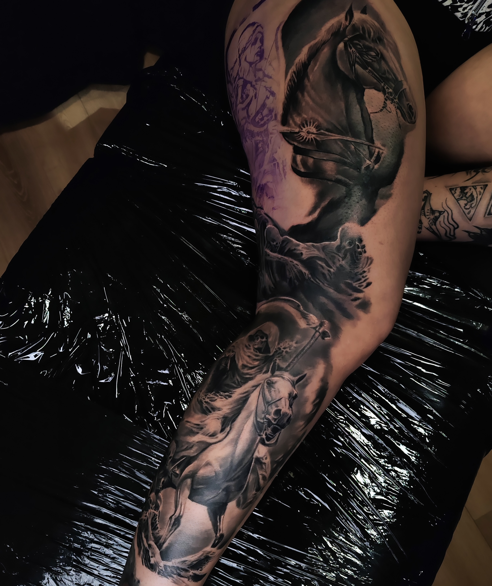
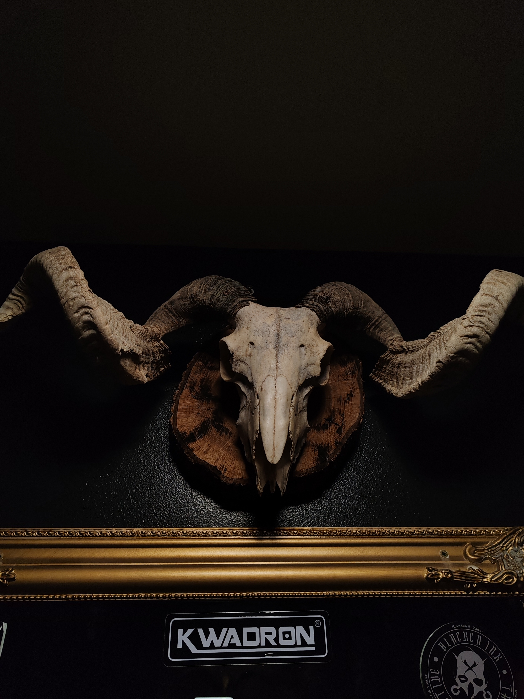
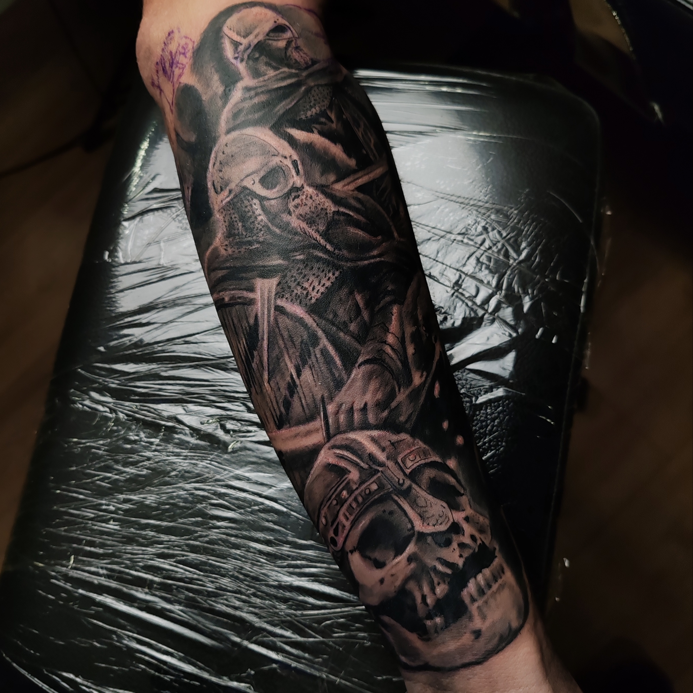
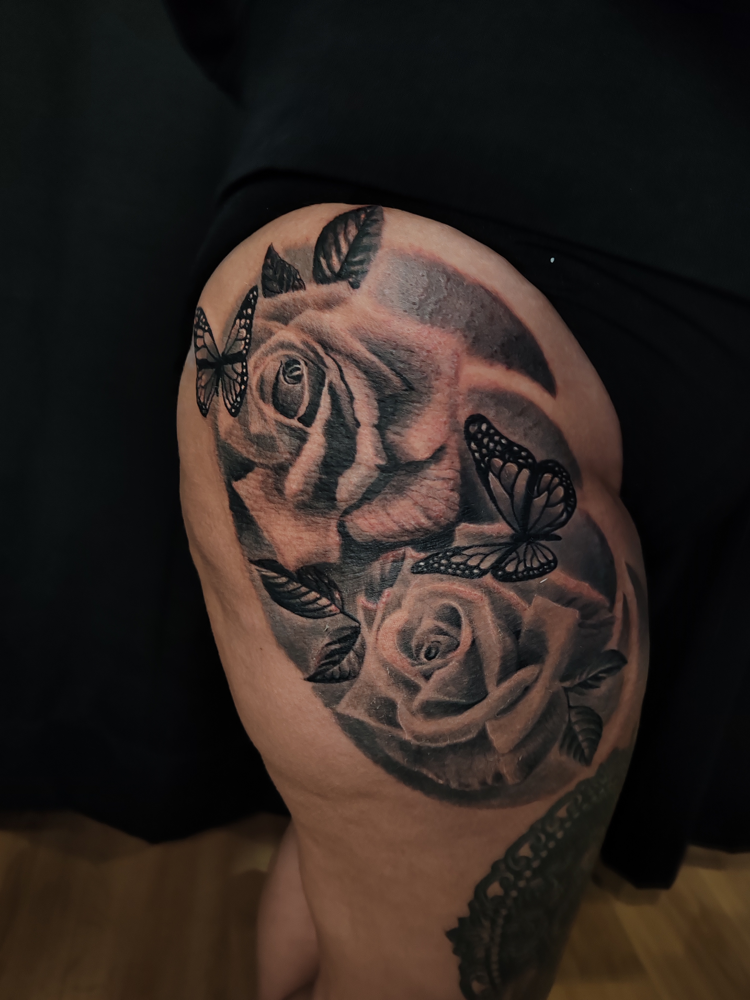